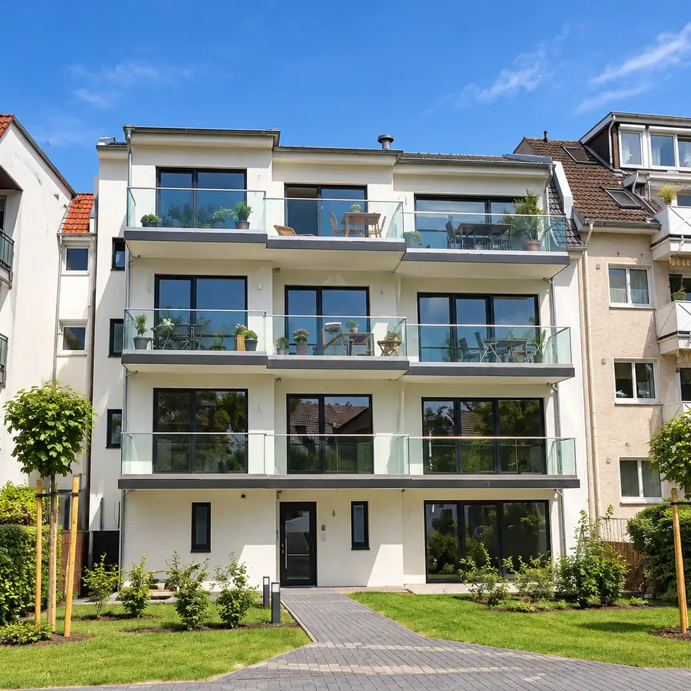
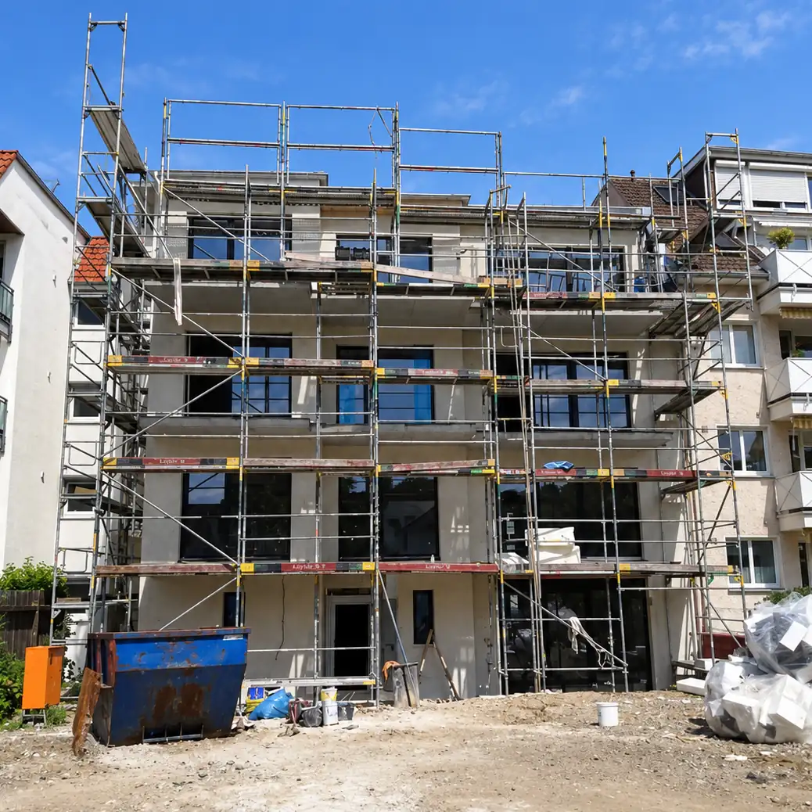
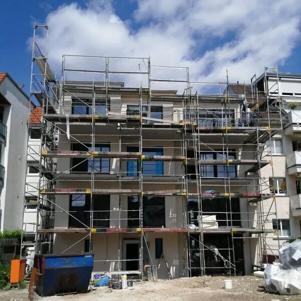

Bauen und Immobilien
Hier hat alles angefangen. Das Bauen ist unser ursprüngliches Geschäft: Seit über 15 Jahren begleiten wir ganze Bauvorhaben – von der ersten Einschätzung eines Grundstücks über die Planung bis zur Übergabe. Wenn Sie ein Haus bauen, eine Immobilie modernisieren oder sich einfach einmal beraten lassen möchten, sind Sie hier richtig.
Vier Bereiche, ein Ansprechpartner
Wir bündeln Planung, Ausführung und Koordination an einer Stelle. Für Sie bedeutet das: eine Nummer, ein Zeitplan, ein Verantwortlicher – statt einem halben Dutzend Gewerke, die Sie selbst zusammenhalten müssen.
Projektentwicklung & Bauplanung
Bevor gebaut wird, muss die Grundlage stimmen. Wir schauen uns das Grundstück an, prüfen, was sich darauf sinnvoll realisieren lässt, und entwickeln daraus eine Planung, die zu Ihrem Budget passt.
- Einschätzung von Grundstück und Bebaubarkeit
- Entwurfs- und Genehmigungsplanung
- Statik und Tragwerksplanung
- Kostenrahmen, bevor Sie sich festlegen
Neubau & Baubegleitung
Vom ersten Spatenstich bis zur Schlüsselübergabe koordinieren wir die beteiligten Gewerke und behalten Termine, Kosten und Ausführungsqualität im Blick. Sie müssen nicht auf der Baustelle stehen – das machen wir.
- Ausschreibung und Vergabe der Gewerke
- Bauleitung und Terminsteuerung
- Qualitätskontrolle auf der Baustelle
- Abnahme und Dokumentation
Sanierung & Modernisierung
Ein in die Jahre gekommenes Haus lässt sich fast immer aufwerten – oft mit weniger Aufwand als gedacht. Wir sehen uns den Bestand an und sagen Ihnen ehrlich, welche Maßnahmen sich rechnen und welche nicht.
- Bestandsaufnahme und Maßnahmenvorschlag
- Kostenvoranschlag mit klaren Positionen
- Energetische Sanierung inklusive Förderprüfung
- Ausführung durch geprüfte Fachbetriebe
Immobilien einschätzen & vorbereiten
Sie überlegen, ein Haus oder ein Grundstück zu verkaufen oder zu vermieten? Wir kennen die Preise in der Region Hannover und sagen Ihnen, wo Ihr Objekt realistisch steht – und mit welchen Maßnahmen sich der Wert noch heben lässt.
- Einordnung in das aktuelle Marktgeschehen
- Welche Aufwertung sich vor dem Verkauf lohnt
- Umsetzung der nötigen Arbeiten
- Begleitung bei vermieteten Objekten
Weniger Schnittstellen, weniger Wartezeit
Der teuerste Teil eines Bauvorhabens sind selten die Materialien – es sind die Wochen, in denen nichts passiert, weil zwei Gewerke aufeinander warten oder eine Freigabe fehlt.
Planung, Statik und Bauleitung liegen deshalb bei einem festen Kreis von Architektinnen und Architekten, Bauingenieuren und Statikern, mit denen wir seit Jahren zusammen bauen. Alle Beteiligten sitzen früh am selben Tisch, Entscheidungen fallen direkt, und Sie haben trotzdem nur einen Ansprechpartner.
- Planung, Statik und Bauleitung abgestimmt statt nacheinander
- Ein fester Ansprechpartner über die gesamte Laufzeit
- Kurze Wege zu den ausführenden Betrieben
- Fenster, Türen und Sonnenschutz aus dem eigenen Haus

Fertiggestellt
RohbauSo läuft ein Vorhaben bei uns ab
Die ersten beiden Schritte kosten Sie nichts und verpflichten zu nichts. Erst wenn klar ist, dass das Vorhaben tragfähig ist, sprechen wir über Zahlen.
Sie erzählen uns, was Sie vorhaben. Wir sagen Ihnen offen, ob und wie sich das umsetzen lässt. Wenn wir nicht die Richtigen sind, sagen wir auch das.
Wir sehen uns das Grundstück oder den Bestand an und prüfen, was das Baurecht vor Ort zulässt. Daraus entsteht ein erster Kostenrahmen – noch ohne Auftrag.
Entwurf, Statik und Genehmigungsunterlagen entstehen abgestimmt. Den Bauantrag reicht die bauvorlageberechtigte Planerin oder der Planer ein, wir koordinieren den Ablauf.
Wir vergeben die Gewerke, steuern die Termine und sind auf der Baustelle. Sie bekommen regelmäßig einen Stand, ohne danach fragen zu müssen.
Gemeinsame Begehung, Protokoll, Beseitigung offener Punkte, Übergabe der Unterlagen. Danach bleiben wir Ihr Ansprechpartner – auch für Fenster und Türen.
Sehen, was daraus wird
Auf unserer Referenzenseite dokumentieren wir laufende und abgeschlossene Bauvorhaben – vom Rohbau bis zur Übergabe. Das sagt mehr über unsere Arbeit als jede Selbstbeschreibung.

Fenster und Türen gleich mitgeplant
Wer neu baut oder saniert, entscheidet irgendwann über Fenster, Haustür und Sonnenschutz. Meist passiert das spät – und dann muss es schnell gehen.
Weil wir Fenster und Türen selbst liefern und montieren, bringen wir diese Entscheidung früh in die Planung ein. Das spart nicht nur eine Schnittstelle, sondern hat handfeste Vorteile: Rohbaumaße und Fensterelemente passen von Anfang an zusammen, Förderanforderungen lassen sich schon im Entwurf berücksichtigen, und Lieferzeiten kollidieren nicht mit dem Bauzeitenplan.
Zu Fenstern und TürenWas Bauherren uns am häufigsten fragen
Ja. Das erste Gespräch und die grobe Einschätzung Ihres Vorhabens sind kostenlos und unverbindlich. Kosten entstehen erst, wenn wir konkrete Planungsleistungen erbringen – und darüber sprechen wir vorher, nicht hinterher.
Im Gegenteil, das ist der beste Zeitpunkt. Ob ein Grundstück zu Ihrem Vorhaben passt, entscheidet sich an Zuschnitt, Baurecht, Erschließung und Baugrund – und das lässt sich vor dem Kauf klären. Wir sehen uns ein Grundstück gern an, bevor Sie sich binden.
Bauvorlagen darf in Niedersachsen nur einreichen, wer bauvorlageberechtigt ist – in der Regel eine Architektin oder ein Architekt mit Kammereintrag oder eine entsprechend eingetragene Bauingenieurin. Diese Rolle übernimmt die Planerin oder der Planer in Ihrem Projekt; wir koordinieren den Ablauf und halten die Fristen im Blick.
Eine seriöse Zahl lässt sich ohne Grundstück und Entwurf nicht nennen – und wer sie trotzdem nennt, korrigiert sie später nach oben. Entscheidend sind Baugrund, Erschließung, Geschossigkeit, Ausbaustandard und die Haustechnik. Nach dem Ortstermin bekommen Sie von uns einen Kostenrahmen, der belastbar ist.
Ja. Nicht jedes Vorhaben braucht das volle Paket. Wenn Sie nur die Bauleitung suchen, nur eine Sanierung planen oder nur eine zweite Meinung zu einem vorliegenden Angebot möchten, ist das genauso möglich.
Ja, das ist ein großer Teil unserer Arbeit. Bei vermieteten Objekten kommt es auf etwas anderes an als beim Eigenheim: Bauabschnitte müssen so liegen, dass Mieter möglichst wenig merken, und jede Maßnahme muss sich rechnen. Beides planen wir von Anfang an mit ein.
Sprechen wir über Ihr Vorhaben
Ob fertige Planung oder nur eine Idee – ein Anruf reicht, und wir sagen Ihnen ehrlich, wie wir helfen können. Für Isernhagen, Hannover und die umliegenden Gemeinden.
Kostenlose Erstberatung